35. Sinyal İşleme ve İletişim Uygulamaları Kurultayı · 4–7 Temmuz 2027 · İstanbul
ORGANİZASYON VE BİLİMSEL LİDERLİK
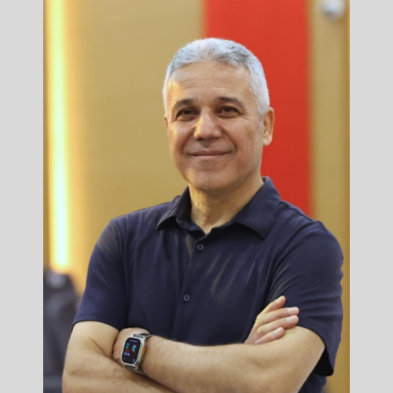
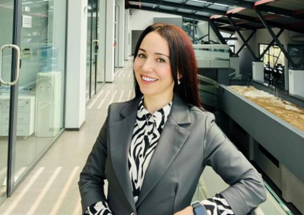
Hoş Geldiniz Mesajı →
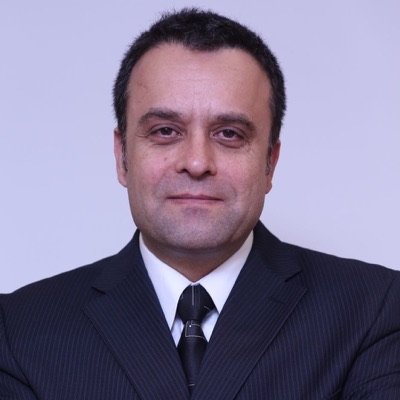
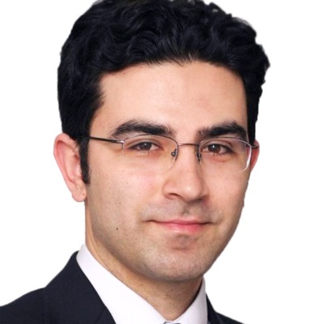
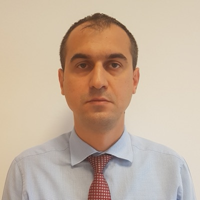
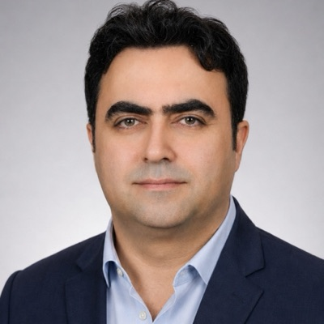
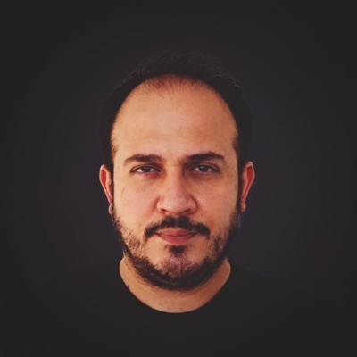
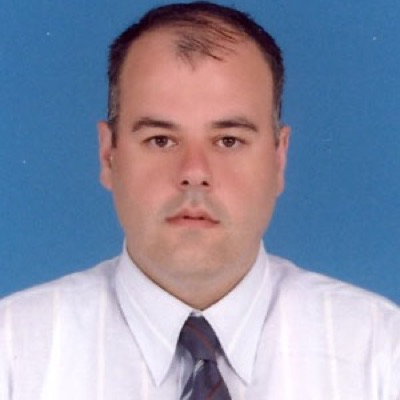
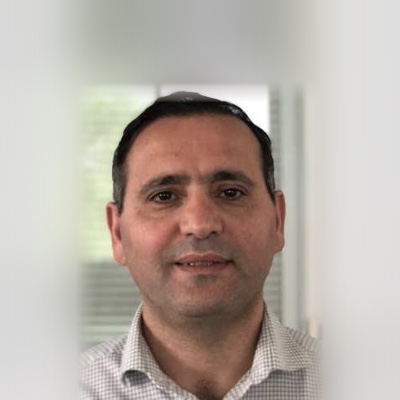
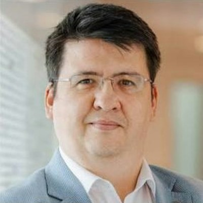
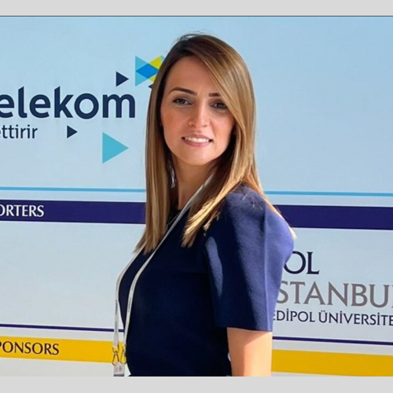
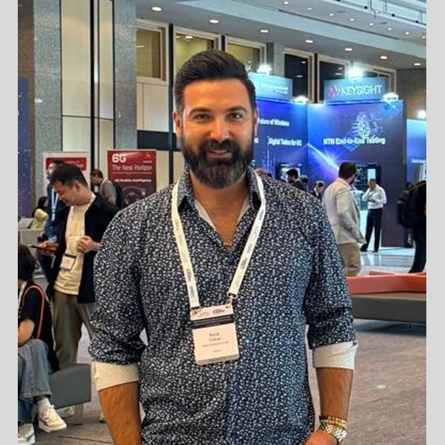
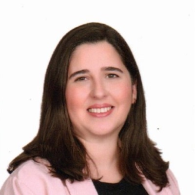
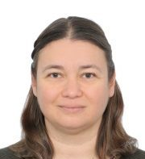
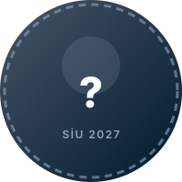
Aramak istediğiniz konuyu yazın veya hızlı başlıklardan seçin.